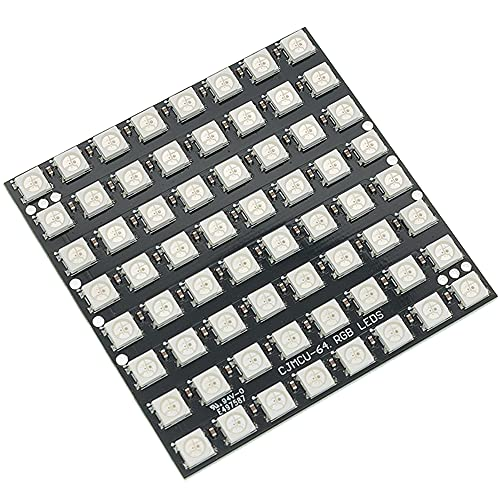
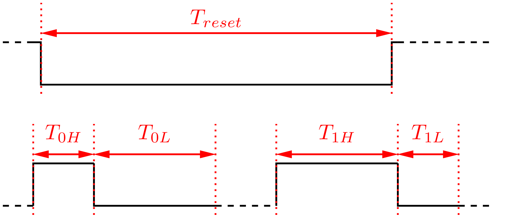
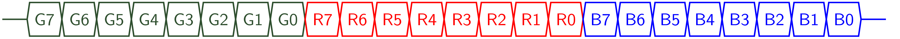
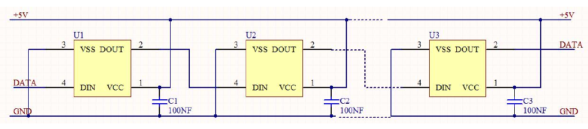
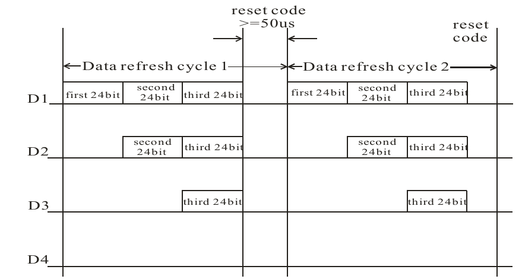
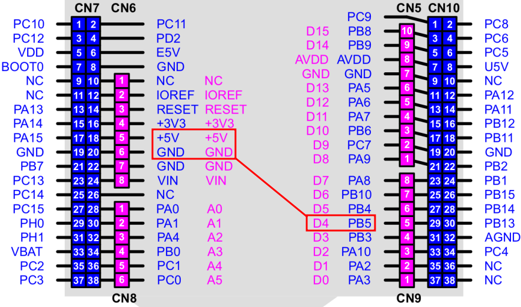

LED WS2812-64 #
Modul obsahuje 64 farebných LED v sériovom zapojení usporiadaných do matice. Každá LED obsahuje obvod WS2812, pomocou komunikačného protokolu je možné riadiť farbu a intenzitu každej LED na module.
{kind=link}

Obr. 37 LED modul WS2812.#
Komunikácia #
Komunikácia s obvodmi riadiacimi LED je sériová, po jednom dátovom vodiči, s pevným časovaním logických stavov.
{kind=link}

Obr. 38 Časovanie logických stavov L,H a RESET.#
Každá farba LED je určená 8-bitovou hodnotou, pre 3 farby (RGB) potrebujeme preto vyslať pre každú LED postupnosť 24 bitov.
{kind=link}

Obr. 39 Kódovanie farebnej informácie.#
LED sú zpojené v sérii, každý riadiaci obvod si z dátového reťazca ponechá prvú informáciu o stave LED a zbytok dátového paketu pošle ďalej. Medzi jednotlivými paketmi je časový interval, ktorý je interpretovaný ako reset.
{kind=link}

Obr. 40 Sériové zapojenie LED#
{kind=link}

Obr. 41 Princíp komunikácie na sériovej zbernici.#
Zapojenie #
Pripojenie modulu je pomocou troch vodičov, napájanie +5V, zem a komunikácia. Pre komunikáciu s modulom je použitá jednodušená verzia zbernice SPI. Nie je použitý hodinový synchronizačný signál zbernice SCLK a jednosmerná komunikácia s modulom je prostredníctvom signálou MOSI.
{kind=link}

Obr. 42 Pripojenie modulu k Nucleo-64 cez rozhranie SPI1.#
SPI1, MOSI, bez CLK
MICROPY_HW_SPI1_MOSI (pin_PB5)
API #
Pre riadenie matice LED je určená knižnica lib_ws2812.py. Hodnoty farieb su kódované do bitovej postupnosti, ktorá je pomocou SPI rozhrania vyslaná do matice.
Kódovanie hodnôt v bitová postupnosti v registri SPI rozhrania pri bitovej rýchlosti 4Mbit/sec zabezpečuje správne časovanie prenosu:
hodnota 0 - postupnosť 1000, doba trvania stavu H - 250 usec
hodnota 1 - postupnosť 1110, doba trvania stavu H - 750 usec
Na vyslanie 8 bitov pre LED potom potrebujeme vyslať 4 Byte v SPI, celkový počet pre jednu LED v matici je 12 Byte.
b7b6 b5b4 b3b2 b1b0
Doba prenosu dát pre jednu LED a celú maticu je potom
Metódy knižnice
WS2812(spi_bus=1, led_count=1, intensity=1)
WS2812.show(data)
Príklady #
Príklad 1. Riadenie farieb LED matice
Inicializácia rozhrania a dáta pre rozsvietenie LED matice
from lib_ws2812 import *
matrix = WS2812(spi_bus=1, led_count=64)
data = [
(24, 0, 24), ( 0, 24, 0), ( 0, 0, 24), (12, 12, 0),
(0, 12, 12), (12, 0, 12), (24, 0, 0), (21, 3, 0),
(18, 6, 0), (15, 9, 0), (12, 12, 0), ( 9, 15, 0),
(6, 18, 0), ( 3, 21, 0), ( 0, 24, 0), ( 8, 8, 8)
]
matrix.show(data) # rozsvieti 16 LED
data=data*4
matrix.show(data) # rozsvieti 64 LED
Opakovaná inicializácia knižnice zhasne LED.
Príklad 2. Náhodné farby
import math
from lib_ws2812 import *
matrix = WS2812(spi_bus=1, led_count=64)
def data_generator(led_count):
data = [(0, 0, 0) for i in range(led_count)]
step = 0
while True:
red = int((1 + math.sin(step * 0.1324)) * 127)
green = int((1 + math.sin(step * 0.1654)) * 127)
blue = int((1 + math.sin(step * 0.1)) * 127)
data[step % led_count] = (red, green, blue)
yield data
step += 1
for data in data_generator(matrix.led_count):
matrix.show(data)
pyb.delay(10)
Príklad 3. Demonštračný program
Demonštrácia vlastností LED matice je v súbore demo_ws2812.py.
import math
from lib_ws2812 import *
from demo_ws2812 import *
matrix = WS2812(spi_bus=1, led_count=64, intensity=0.05)
while(True):
anim_1 = animation_1(matrix.led_count)
for i in range(240):
matrix.show(next(anim_1))
anim_2 = animation_2(matrix.led_count)
for i in range(240):
matrix.show(next(anim_2))
anim_3 = animation_3(matrix.led_count)
for i in range(240):
matrix.show(next(anim_3))